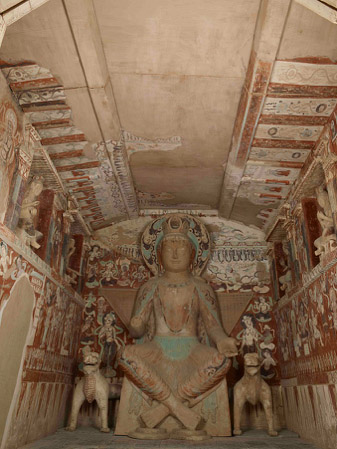

Cross-ankled Bodhisattva Maitreya statue, Dunhuang Caves #275, Principal (West) Wall
The statue of Bodhisattva Maitreya on the principal wall is 3.4 metres tall. The varada mudrā shown by his left
hand expresses his commitment to fulfil the wishes of all sentient beings. He wears a crown with the
image of a Transformation Buddha in the front, upon his curly hair which falls over the shoulder.
The skirt clinging closely to his legs have contours and drapery folds modelled by appliqué
clay and incised lines.
Likewise, similar style of triangular backrest carved with brocade motif in bas-relief has also
been found in the rock-cut caves of Xinjiang and Afghanistan. The iconographic origin of this type
of cross-ankled bodhisattva statues can be traced back to Afghanistan, generally believed to have
come to Dunhuang from the Western Regions. These iconographical characteristics reveal the adoption
of Buddhist art of the Western Regions in earlier Dunhuang caves. (4)